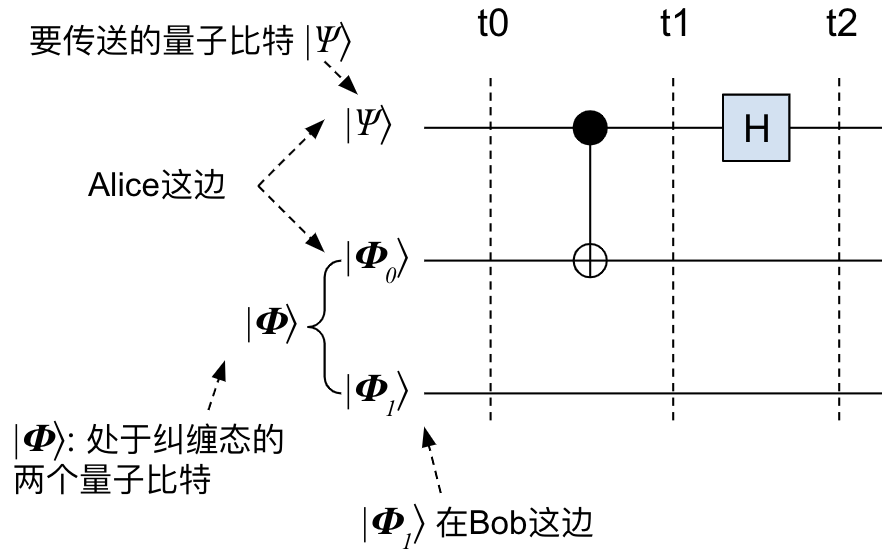

瞬间移动？传送门？“量子隐形传态”是怎么回事？
Ping Zhou, 2020-10-15
注： 本文也发布在作者的个人公众号上，转载请注明作者。
说起“ 量子隐形传态 ”（ Quantum Teleportation ），你会想到什么？传送门？瞬间移动？是不是感觉很科幻？其实，量子隐形传态是已经被实验证实的现象，所以理论上说是可以用来制造传送门的……今天我们就来聊聊，量子隐形传态到底是怎么回事。
既然叫“隐形传态”，那么必然有发送方和接收方。这里我们给发送方起名叫Alice，接收方起名叫Bob。假设Alice那边需要传送的量子比特是 \(|\Psi\rangle\) = \((\alpha|0\rangle + \beta |1\rangle)\) 。我们的目标是在Bob那端得到一个和 \(|\Psi\rangle\) 状态完全一样的量子比特。
量子隐形传态需要用到 量子纠缠 ，我在这篇专栏文章里有介绍。简单的说，Alice和Bob之间要准备一对纠缠态的量子比特 \(|\Phi_0\Phi_1\rangle\) ： \(|\Phi\rangle\) = \(|\Phi_0\Phi_1\rangle\) = \((\frac{1}{\sqrt{2}}|00\rangle + \frac{1}{\sqrt{2}}|11\rangle)\) 这两个纠缠态的量子比特，Alice和Bob各拿其中一个，Bob可以在很远的地方，只要两个量子比特仍然处于纠缠态，隐形传态就能进行。
好了，准备工作完成，我们可以来搭电路了！
Alice这边的电路长这样：

老规矩，我们分时序来分析：
t0:
\(|\Psi\rangle |\Phi\rangle = (\alpha|0\rangle + \beta |1\rangle) (\frac{1}{\sqrt{2}}|00\rangle + \frac{1}{\sqrt{2}}|11\rangle)\)
，展开成
\begin{matrix} \frac{\alpha}{\sqrt{2}}|000\rangle + \frac{\beta}{\sqrt{2}}|100\rangle + \frac{\alpha}{\sqrt{2}}|011\rangle + \frac{\beta}{\sqrt{2}}|111\rangle \end{matrix}t1: \(|\Psi\rangle\) 和 \(|\Phi_0\rangle\) 经过CNOT门，系统状态变成了
\begin{matrix} \frac{\alpha}{\sqrt{2}}|000\rangle + \frac{\beta}{\sqrt{2}}|110\rangle + \frac{\alpha}{\sqrt{2}}|011\rangle + \frac{\beta}{\sqrt{2}}|101\rangle \end{matrix}t2: \(|\Psi\rangle\) 再经过一个H门，前面我们说过，H门会把 \(|0\rangle\) 变成 \(\frac{1}{\sqrt{2}}(|0\rangle + |1\rangle)\) ，把 \(|1\rangle\) 变成 \(\frac{1}{\sqrt{2}}(|0\rangle - |1\rangle)\) 。那么把这个替换上面的 \(|\Psi\rangle\) ，系统状态变成了：
\begin{matrix} \frac{\alpha}{2}(|0\rangle+|1\rangle)|00\rangle + \frac{\beta}{2}(|0\rangle-|1\rangle)|10\rangle + \frac{\alpha}{2}(|0\rangle+|1\rangle)|11\rangle + \frac{\beta}{2}(|0\rangle-|1\rangle)|01\rangle \end{matrix}重新排列组合一下，变成：
\begin{matrix} \frac{1}{2}|00\rangle(\alpha|0\rangle+\beta|1\rangle) + \frac{1}{2}|01\rangle(\beta|0\rangle+\alpha|1\rangle) + \frac{1}{2}|10\rangle(\alpha|0\rangle-\beta|1\rangle) + \frac{1}{2}|11\rangle(\alpha|1\rangle-\beta|0\rangle) \end{matrix}看出什么没有？
在这个状态下，如果我们对Alice这边的两个量子比特 \(|\Psi\rangle\) 和 \(|\Phi_0\rangle\) 进行测量，那么Bob那边的量子比特 \(|\Phi_1\rangle\) 在测量后的状态取决于前两个量子比特 \(|\Psi\rangle\) 和 \(|\Phi_0\rangle\) 的测量结果！例如：
- 如果Alice测量 \(|\Psi\rangle\) 和 \(|\Phi_0\rangle\) 得到00，那么根据上面的公式，第三个量子比特 \(|\Phi_1\rangle\) 状态一定是 \((\alpha|0\rangle+\beta|1\rangle)\) 。
- 如果Alice测量 \(|\Psi\rangle\) 和 \(|\Phi_0\rangle\) 得到01，第三个量子比特 \(|\Phi_1\rangle\) 状态一定是 \((\beta|0\rangle+\alpha|1\rangle)\) 。
- 如果Alice测量 \(|\Psi\rangle\) 和 \(|\Phi_0\rangle\) 得到10，第三个量子比特 \(|\Phi_1\rangle\) 状态一定是 \((\alpha|0\rangle-\beta|1\rangle)\) 。
- 如果Alice测量 \(|\Psi\rangle\) 和 \(|\Phi_0\rangle\) 得到11，第三个量子比特 \(|\Phi_1\rangle\) 状态一定是 \((\alpha|1\rangle-\beta|0\rangle)\) 。
Bob手里的 \(|\Phi_1\rangle\) 的这几个可能的状态，都可以通过适当的X或Z变换，变成 \(\alpha|0\rangle+\beta|1\rangle\) ，也就是 \(|\Psi\rangle\) 。所以，如果Alice把测量结果告诉Bob，那么Bob根据就可以根据Alice的测量结果，把手里的 \(|\Phi_1\rangle\) 变成Alice要传送的 \(|\Psi\rangle\) ！
- 如果Alice测量 \(|\Psi\rangle\) 和 \(|\Phi_0\rangle\) 得到00，什么也不用做， \(|\Phi_1\rangle\) 状态已经是 \((\alpha|0\rangle+\beta|1\rangle)\) 。
- 如果Alice测量 \(|\Psi\rangle\) 和 \(|\Phi_0\rangle\) 得到01，那么 \(|\Phi_1\rangle\) = \((\beta|0\rangle+\alpha|1\rangle)\) ，对它做一个X变换就可以变成 \((\alpha|0\rangle+\beta|1\rangle)\) 。
- 如果Alice测量 \(|\Psi\rangle\) 和 \(|\Phi_0\rangle\) 得到10，那么 \(|\Phi_1\rangle\) = \((\alpha|0\rangle-\beta|1\rangle)\) ，对它做一个Z变换就可以变成 \((\alpha|0\rangle+\beta|1\rangle)\) 。
- 如果Alice测量 \(|\Psi\rangle\) 和 \(|\Phi_0\rangle\) 得到11，那么 \(|\Phi_1\rangle\) = \((\alpha|1\rangle-\beta|0\rangle)\) ，对它做一个X变换再加一个Z变换，就可以变成 \((\alpha|0\rangle+\beta|1\rangle)\) 。
加上Bob那边的步骤，**完整的量子隐形传态电路**是这样滴：
最终在接收方Bob那里，得到了一个和Alice准备的 \(|\Psi\rangle\) 完全一样的量子比特，也就是说，Alice成功的把 \(|\Psi\rangle\) 传送到了Bob那里！
总结一下整个传送过程：
- Alice准备要传送的量子比特 \(|\Psi\rangle\) = \((\alpha|0\rangle+\beta|1\rangle)\) 。
- Alice和Bob之间准备一对纠缠态的量子比特 \(|\Phi_0\Phi_1\rangle\) ，Bob可以拿着 \(|\Phi_1\rangle\) 跑到很远的地方去，只要它们仍然处于纠缠态，传送就能进行。
- Alice跑一下上面的电路，然后对 \(|\Psi\rangle\) 和 \(|\Phi_0\rangle\) 进行测量。
- Alice把 \(|\Psi\rangle\) 和 \(|\Phi_0\rangle\) 的测量结果告诉Bob。
- Bob根据 \(|\Psi\rangle\) 和 \(|\Phi_0\rangle\) 的测量结果，对 \(|\Phi_1\rangle\) 进行必要的变换，得到和 \(|\Psi\rangle\) 完全一样状态的量子比特。
超光速？ 一个常见的迷思，量子隐形传态是否会造成超光速传送？如果Alice和Bob相隔很远，是否意味着可以瞬间把一个量子比特的状态传到另一端？答案是不能。简单回顾一下前面的传送过程就可以看到，量子隐形传态要完成，Alice需要把测量结果告诉Bob（第4步），而这个信息只能通过经典信道传递，也就是说不能超光速。所以量子隐形传态并不能超光速传送量子比特的状态。
量子不可复制性 我们知道量子信息有不可复制性。通过量子隐形传态，Alice把手里的量子比特 \(|\Psi\rangle\) 传送给了Bob，那么这是否意味着Bob那里有了一个 \(|\Psi\rangle\) 的副本呢？这是否和量子信息的不可复制性矛盾？答案是没有。回顾一下刚才的过程，Alice那里要对 \(|\Psi\rangle\) 进行测量才能告诉Bob（第3步），测量后 \(|\Psi\rangle\) 就坍缩成0或者1了，所以Bob那里得到一个和 \(|\Psi\rangle\) 相同状态的量子比特时，原先的量子比特 \(|\Psi\rangle\) 已经不存在了。
脑洞一下：传送门 科幻里的传送门能否实现？理论上用量子隐形传态是有可能滴……假如我们要把一个人从一个地方传送到另一个地方，我们可以这么搞：得到一个人身上所有粒子的状态，然后通过量子隐形传态，把每个粒子的状态传送到目的地，那么在另一个地方出现的这个“人”，其每个粒子的状态都和原来一样，可以说就是“本人”。而在出发地的那个“人“，其所有粒子状态都被测量坍缩，已经不存在了。当然，换一种角度看，本人其实并没有被传送过去，而是已经毁灭，目的地那个只是状态完全一样的副本，这么理解也对，就看你喜欢哪种解释了……
量子隐形传态就讨论到这里，下次有空我们试试用Cirq来模拟这个过程。